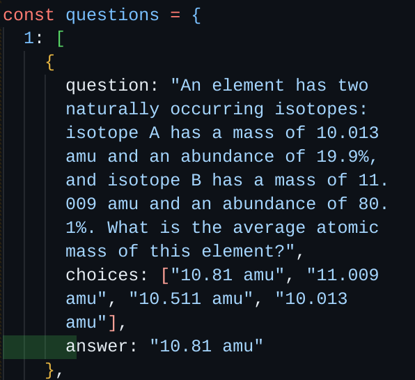

This was my 11th grade freedom project. Using Javascript, along with my tool in Node.js to make an API, and my partners tool Kaboom, which we learned all year long
We separated our freedom project into two parts, our learning process and our building process. During the learning process, I chose to learn how to build an API using Node.js. The biggest challenge I faced with this was actually learning it in the first place, since I couldn't find any starting points to learn, and I had to rush at the end to learn it. The second part was the building part, which was the significantly easier part. The only challenging part about it was putting Kaboom and Node together, and then making it appear on Github Pages. We used a program called Render to be able to view the API on Github Pages. The only downside about using Render is that it takes about 30 seconds to start the program. Our biggest takeaway from doing all this is to make sure your communication with your partner is spot on. Without good communication, your entire project falls apart. If me and my partner had more time to work on this, I think we would've made an easy mode, and a hard mode, as well as make pictures visible as opposed to writing out each question.
Link to the project